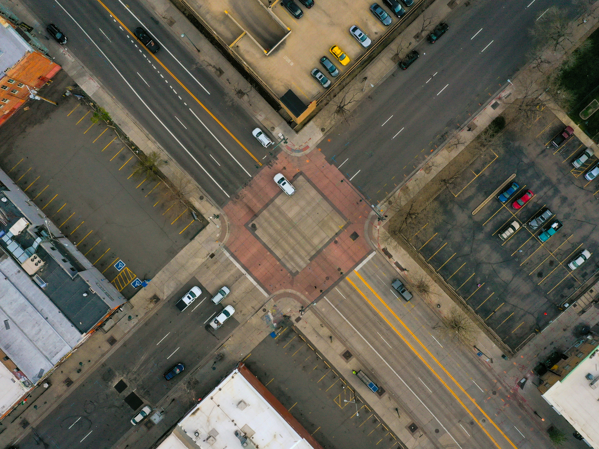

The Cost of Indecision
“More is lost by indecision than wrong decision.”
— Cicero
You are standing at a fork in the road. One path may lead to failure, while the other may lead to success. Yet instead of choosing one or the other, you wait. Time goes on. Hours pass, then days. Eventually, the opportunity to choose disappears altogether. You can no longer choose a path to take. This brings you to a worse point than you would have been in, even if you chose the wrong path. In life, the greatest mistake is not always choosing the wrong direction, but refusing to choose one at all. We often believe that delaying a decision keeps every option available. In reality, indecision is a decision of its own. Every moment we spend waiting, the opportunities move without us. Whether that means applying for a job, pursuing a passion, ending an unhealthy relationship, or simply speaking up, our fear of making the wrong decision can become what is actually hurting us.
So why is it that we hesitate? Most of the time, it’s not because we lack options, but because we fear the feeling of regret. We imagine the consequences of making the wrong choice far more clearly than the consequences of never choosing at all. We become so focused on the cost of failure that we overlook the greater cost of standing still. Yet, failure teaches us something valuable. It gives us a reference on how to improve, and what we can change in the future. Indecision, however, rarely teaches us anything other than dwelling on what could have been.

Think about how many opportunities would disappear not because they were rejected, but because they were never tried. Friendships are never formed because we were afraid to say hello. They start when we quit thinking about the worst that can happen. Businesses were never created because someone waited for the ‘perfect’ moment. They took the determination and risk to become great. Dreams are never pursued because certainty never came. Most of the time, our greatest regrets are not the mistakes we made, but the opportunities that we allowed to pass us by.
However, this does not mean that we should rush our decisions. Most choices deserve careful thought and research. But there is a difference between thinking and postponing. One prepares us to act, while the other makes us forget to act at all. In the end, the wrong decision can often be corrected. You cannot correct, however, the decision you never made. In reality, the greatest opportunities in life do not come to those who waited for certainty. They come to those who were willing to move forward without it. Thank you for reading Social Science 43, and have a stellar day.
Comments Section
Share your thoughts here!